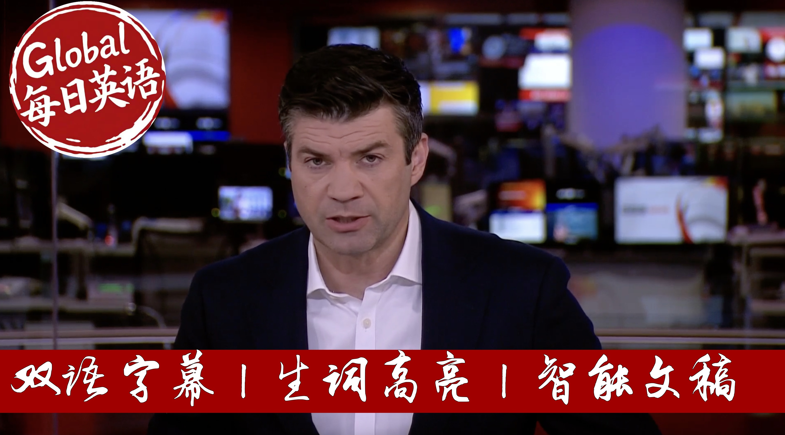

【【生词双高亮】BBC News 20250908 特朗普向哈马斯发出"最后警告"｜俄罗斯导弹击中乌克兰政府总部｜全球多地观测到"血月"月食奇观】
Summary: Israel intensifies strikes on Gaza City as Trump issues "final warning" to Hamas over hostage deal. Russian missiles hit Ukraine's government headquarters for the first time, killing at least four. UK migrant arrivals exceed 30,000 amid record Channel crossings. A lunar blood moon eclipse captivates global spectators.
摘要： 以色列军队加强对加沙城的空袭，三天内摧毁第三栋高层建筑。特朗普向哈马斯发出"最后警告"，要求接受人质释放协议。俄罗斯导弹首次击中乌克兰政府总部，造成至少4人死亡。英吉利海峡偷渡人数突破3万创纪录。全球多地观测到"血月"月食奇观。

⏱️ Estimated Reading Time: 41 min.
📚 四级生词 📚 六级生词 📚 雅思生词 📚 托福生词 📚 专八生词 📚 SAT生词 📚 考研生词 📚 GRE生词
Live from London, this is BBC News.
The Israeli military has destroyed another tower blocking Gaza City as it presses forward with its offensive.
This is the third strike in the area in as many days.
President Trump has again issued what he called his last warning to Hamas.
He posted on social media that the Palestinian militant group urging it to accept a deal to release hostages from Gaza.
President Zelensky has promised an appropriate response to Russia's overnight strikes on Ukraine's main government building.
At least four people were killed across the country.
Kierstarmass at the bombardment showed President Putin was not serious about peace.
In the UK, the Home Office confirms the number of migrants arriving in the country after crossing the English Channel has top 30,000 in record time.
And a spectacular lunar blood moon eclipse captivates skygators around the world.
MUSIC
Hello, I'm Lewis Vaughan Jones.
Welcome to the programme.
President Trump has again issued what he called his last warning to Hamas.
He is urging the Palestinian militant group to accept a deal to release hostages from Gaza.
Post on social media he said the Israelis have accepted my terms.
It's time for Hamas to accept as well.
I've warned Hamas about the consequences of not accepting.
This is my last warning.
There will not be another one.
Well, this comes as Israel says it's hit another high-rise building in Gaza city.
This was after earlier issuing evacuation orders.
It's the third such building to be targeted in the past three days.
This is as Israel intensifies its assault on the territory's largest urban area.
The idea is that such buildings were being used by Hamas militants.
Well, our correspondent, Wora Davis, is in Jerusalem.
The American government, both Donald Trump and indeed Joe Biden before him, have always 100% supported Israel's prosecution of the war in Gaza.
They have supported the way that Israel has fought over the last two years.
But Donald Trump is known to have become frustrated with the way the war has dragged on.
Because it's gotten the way of his desire to be seen as a peacemaker.
It also affects his ability to make deals with countries in the region.
So this, I think, is perhaps far as Donald Trump is concerned the last chance saloon almost.
It is for some sort of ceasefire agreement.
And all we're getting is from Donald Trump's side at the minute.
But this deal he's put forward does appear to be if well-played sources are to be believed very much from the Israeli perspective.
It does, for example, include the release of all the hostages who remain alive.
It also includes maybe 24 or 25 others who are thought to be dead.
And there would be no formal commitment to end the war.
Although there would be a ceasefire process.
Then talks begin as part of that process.
Perhaps those talks are towards ending the war formally.
So it is according to Donald Trump, something that is favorable to the Israelis.
And according to Trump, the Israeli government has agreed to it.
Although we're not getting quite those positive signs from Israel yet.
Israeli media reports tonight say that it's been very seriously considered by Israel.
The question, of course, is what do Hamas think about it?
They had previously agreed to other ceasefire proposals.
Those proposals were put forward by the mediators from the Qataris in Egypt.
But we don't know yet if these so-called proposals from Trump will be acceptable to Hamas.
Although Trump has warned that if Hamas doesn't accept his proposals, the consequences will be dire.
And meanwhile, the Israeli military offensive continues.
Yeah, that's the reality on the ground.
Almost 100 people have been killed in Gaza in the last 24 hours.
Israel has stepped up and is stepping up its military offensive.
This is particularly in and around Gaza City.
Another high-rise building, a residential building, was destroyed by the Israelis today.
Israel had accused Hamas of using that building.
They said it was specifically used as an intelligence gathering center.
It had warned people in the building and in the vicinity to leave,
in anticipation of that airstrike that destroyed the building.
Israel, of course, is trying to persuade tens of thousands of garsens to move further south to an area called Al-Mawasi.
Israel described this as a humanitarian safe zone.
Although Al-Mawasi itself has been targeted several times during the war.
including a very recently, a civilians have been killed there.
And according to the UN, there is no such thing as a real safe zone in Gaza.
Thanks to Wira Davis for that.
Next, a Russian missile has struck the main government building in Kiev.
This is the first time in the war that the Ukrainian government headquarters were hit.
There's video showing smoke billowing from the compound.
Firefighters battle flames there.
Russian drone and missile attacks across Ukraine overnight also damaged many residential buildings.
At least four people have been killed.
More than 44 were injured.
Ukraine's president Zelensky described the attacks as ruthless.
He vowed an appropriate response.
Our Europe correspondent Sarah Rainesford is in Kiev.
This is how Kiev was broken today.
And for the first time, a government building was hit.
The city centre is the best protected space in all Ukraine.
But this was Russia's biggest attack of the war so far.
Ukraine's air defences were overwhelmed.
So another drone did this to a block of flats.
This morning, emergency teams were still searching the wreckage.
They were looking for bodies.
They were trying to make the place safe.
All around were those who survived.
They can still barely believe it.
A young woman and her baby son were killed here.
Our tent filmed the fire.
This was moments after his family had escaped from the fifth floor.
Yelena describes multiple blasts one after another.
There was no time to seek shelter.
This was the biggest number of drones yet.
It's terrorism against civilians.
There were more than 800 drones overnight across Ukraine.
We're now seeing scenes like this more and more often.
Because Russia is increasing its attacks on Ukraine.
That means that people here who are affected are not just upset and shocked.
They're really angry.
Because while Vladimir Putin tells Donald Trump he's ready for peace to negotiate on the ground in Ukraine, this is the reality.
Valentina, like everyone here, was woken today by her windows being blown in.
I asked what she thought about talking to Putin.
Trump says Putin is a good guy, she tells me.
If he were, then this war would never have started.
Valentina's flat was destroyed.
She believes Russia wants to destroy her country.
Sarah Enzlod, BBC News, Cueve.
President Trump says he's ready to move to the second stage of sanctioning Russia.
But he didn't specify what he meant by that.
The recent days his administration has indicated it might be prepared to increase the pressure on Moscow over its invasion of Ukraine.
He's been speaking briefly to reporters.
Here's our North America correspondent, Runa Day Mukichi.
It was a very brief interaction, and you had it right there where he just said yes I was,
and essentially making it very clear that he perhaps is now in the mood to go ahead and look at what is likely to come next when it comes to Russia and sanctions.
He didn't specify what those sanctions could look like, what shape they would take to what extent.
But we did hear from the U.S. Treasury Secretary Scott Besinter a while back where he was speaking to NBC News' Meet the Press program when he said that they were prepared to increase more pressure on Russia, more economic pressure, which in fact if I could just quote, would drive the Russian economy towards a full collapse, and that would bring President Putin to the table.
Mr. Besinter also pointing out that President Trump and Vice President Vance had a very productive call for the European Union precedent,
and that they are prepared to increase pressure, but the European partners must also follow them.
So it seems to be that given everything that we've seen over the last 24 hours play out in Kiev certainly has pushed Donald Trump to go ahead and consider this.
The Trump administration had always maintained that they would be consequences if Vladimir Putin did not hold up the end of his bargain.
But this is all very significant because this will be seen as a huge setback coming less than a month since that summit we saw in Alaska where President Trump and President Putin met,
and it was a meeting after which Donald Trump said great progress had been made.
But look at us where we are at the moment, less than a month on now, and Donald Trump considering further sanctions on Russia.
And there have been critics, critics of Donald Trump saying that simply secondary sanctions, that's, you know, as we're outlining their sanctions on other countries who are doing business with Russia should come in.
And there's been criticism that Donald Trump simply hasn't followed up any words previously.
And it hasn't done enough when it comes to putting pressure on Vladimir Putin.
And that criticism is likely to get louder.
In fact, it was fairly loud as well after the summit where many political operatives also pointed out that
looked this was all being done for the optics with very little substance in this summit and very little actually being achieved.
Donald Trump said there is no deal until there is a deal.
Essentially, you know, this has been a conflict that Donald Trump has been trying to end for a very long time.
And he has expressed frustration repeatedly in the past that he's not been able to get this done.
And this would certainly add to that frustration as well.
You'd remember last month just before those two leaders met,
Donald Trump had given a deadline an ultimatum of sorts that Russia must come to the talking table or at least show some indicators off going ahead and working towards ending this war.
If not, there will be very severe consequences in terms of tariffs or even secondary sanctions.
But once the announcement was made that the two leaders would be meeting, you know, that the prospects of sanctions kind of just went on the back burner.
It was overshadowed, overpowered by the meeting between the two leaders.
Since then, we haven't seen anything.
And this is the first time now we've seen an inclination by Donald Trump to go ahead and do this.
It's not just about sort of, you know, acting on the fact that Russia has continued its offensive on the ground there.
But also a message to a lot of people who had viewed the summit with criticism, with skepticism,
that Donald Trump is still very much ready to go ahead and take that next step against Russia to show the tougher side of the U.S. when it comes to trying to get Vladimir Putin back to the negotiating table.
But one thing is clear, Lewis, in all of this, that, you know, a month ago,
there was this perception or this messaging that was created that they had never been close enough to actually achieving some sort of progress on this.
But here, at the moment, it appears that peace or even end to the war still seems very far off.
Thanks to Orundey for that.
Well, earlier, I spoke to Michael Bossek, senior fellow at the Atlantic Council and the creator of the World Briefing Newsletter.
I have difficulty believing anything that comes out of Mr. Trump's mouth.
There's one thing and one thing only he cares about.
Those are his popularity ratings.
And if he were to pull some levers and place harsh sanctions either on Russia or on secondary buyers of Russia oil,
it could affect the American economy, which is getting a little bit creaky at the moment.
So, and you know, one also has to ask a very valid question, whatever happened to that Senate bill that had apparently 85 co-sponsors and would levy 500% tariffs on buyers of Russian oil.
It seems to have fallen by the wayside.
One more thing here, you know, India has been slapped with sanctions for that very reason by Mr. Trump because it buys a lot of Russian oil.
And yet if you listen to Prime Minister Modi, he's not too concerned about it.
They're looking more inward and self-reliance and they don't seem to have been impacted so far very much by this.
Well, given all that you've just outlined there, can you see any room for optimism, a path potentially through here?
I think a lot now depends on Ukraine itself and on European leaders.
I think European leaders have to somehow come up with a gusto to not just think about what they're going to do in a post-war Ukraine with that coalition of the willing,
but what they're going to do right now, what happened last night of Renate and Kiiv in here in Odessa is very, very worrisome.
That kind of shield that's supposed to protect the government quarter didn't work completely to 100%.
So they have to speed up the means to provide more weaponry, more defense systems to Ukraine, more long-range powerful missiles to strike legitimate targets inside of Russia.
And finally, unfreeze the almost 200 billion euros and frozen Russian assets, sitting in European banks, give that to Ukraine to help them fight.
Thanks to Michael Bossekiw for that.
Next, the number of migrants arriving in the UK after crossing the English Channel has top 30,000 in record time according to Home Office figures.
It's the latest milestone to be reached after record numbers of people made the dangerous journey so far this year, despite ministers seeking to crack down on people smuggling gangs.
Little earlier, I spoke to our correspondent Simon Jones.
The figures are quite stark.
Yesterday, 1,097 people made the crossing on 17 boats.
That's an average of 65 people per boat.
So we talk about small boats, but they've been getting bigger and bigger with more and more people dangerously packed onto them by the people smugglers who organize these journeys from northern France.
Yesterday hugely busy in the channel, so the border force were called out because once the boat gets into UK waters, it becomes the responsibility of the UK authorities.
The people are picked up for their safety and brought to Dover, but we also know the French authorities were out on the channel.
But they say they return 24 people to France who had got in difficulty at sea.
They said they offered to help more people, but the migrants on board some of the boats refused to be helped because they wanted to get into UK waters and reach their goal of getting taken to Dover.
I'll just talk about the politics here.
New person in charge, talk us through what the approach potentially could be.
Yesterday was of course the first full day in office of the new home secretary, Shemar, of Aunt Mahmoud.
And she says that the numbers are utterly unacceptable.
It's really a reality check of how difficult this issue is going to be for her in her new role.
She says she's exploring all options to restore order to the immigration system.
And tomorrow in her first major engagement as home secretary, she's going to be holding a meeting of the five eyes alliances.
That brings together interior ministers from countries such as the US and Canada to talk about security issues and illegal immigration.
And border security is going to be high on the agenda on that summit.
But we're hearing from the opposition conservatives, they say, a new home secretary hasn't made any difference to the numbers.
It won't make any difference to government policy and the conservatives accuse Labour of being weak on this issue.
I think perhaps the big hope for the government and the new home secretary is closer to home and you returns agreement with the French authorities.
Now that means that the UK for the first time will be able to send back to France some migrants arriving in Dover on small boats.
And in return the UK will accept some asylum seekers from France, the same number believed to have a legitimate claim to come to the UK.
We're expecting numbers initially as part of this exchange to be small but possibly the first migrants arriving in Dover will be deported later this month.
And the government hoping that could start acting as a deterrent because the numbers that we saw yesterday are going to be very worrying for ministers who promised to smash the gangs.
Thanks to Simon there.
Now people right around the world have been enjoying a stunning spectacle tonight, a total lunar eclipse.
It would turn the full moon red as it passes through the earth's shadow there, takes on that deep red hue creating a striking blood moon.
The lunar eclipse is when the earth is positioned between the sun and the moon and the moon is in the darkest part of the earth shadow called the umbra.
And that's a total lunar eclipse.
Now the moon doesn't emit its own light so some may ask how can we see the moon at all then.
Well the sun, the light from the sun, passes through the earth's atmosphere and it has to pass through such a long distance that some of the blue light which is the shorter wavelength scatters more easily and filters out through our atmosphere.
And the longer red wavelength continues to push past the earth's atmosphere and refracts around it and then hits the moon's surface
which is why it appears as a sort of reddish tinge as many of us saw on some beautiful pictures through this evening.
Yes, so it was quite a couple of hours and you could kind of see it from well it's about three quarters of the earth you could see it and it did look absolutely spectacular.
Just talk us through the kind of symbolism that was the ancient history, the meaning behind the eclipse.
So around 85% of the globe's population managed to see this event so 6 billion people so it's no wonder in Asian times that they thought that it was such a sort of ominous event.
They had no idea about the science back then but of course we do now but in ancient editions the ink of people thought that the jaguar had eaten the moon which is why it turned blood red in color.
But nowadays some believe it's a sign of transformation and new beginnings but of course it's just a great way to get out and connect with nature and understand the mechanics of the solar system.
A lot of star gazing type stuff you really need the equipment you need to be in the up high you know all that kind of stuff but this was really visible just taking outside as long as there's no cloud.
Absolutely I mean parts of Asia were the best views of it they sought from the beginning to the end was 82 minutes long
so really great spectacular event to see but yeah I mean in the UK you needed to be up on higher ground
you needed to have clear skies but you don't need any fancy equipment which is the beauty of it
and if you want to take a photo you just eat a little of your canvas exposure so yeah it's available to all.
We were seeing some of these pictures like like they're on on screen now absolutely beautiful and I suppose part of the hope is that people out and about and they suddenly see it and learn a bit about it and then that's a chance to kind of hook people in hook people into your kind of world.
Yeah absolutely it's a great chance to get people involved in interested in science and nature.
If anyone was on luck enough and didn't see it this time when is it when is it happening again.
So the next one is in August 2026 but it's only a partial one for us in the UK so yeah it's still going to be a good event to go down see.
Thanks to your Sophia for that.
Next South Korea says it's reached an agreement with the US to release nearly 300 of its citizens detained in a huge immigration raid at a Hyundai plant in Georgia.
The office of South Korea's president says a chartered plane would be sent to bring them home.
US officials detained 475 people who they said were found to be illegally working at the battery facility.
The White House has defended the operation just missing concerns the raid could deter foreign investment.
BBC verified Nick Beak has more.
They arrived in force an army of federal officers here to carry out the biggest immigration raid of Trump's second term.
We need construction to cease immediately we need all work to end on the site right now.
The location a huge Hyundai plant the target nearly 500 suspected illegal workers the majority South Koreans.
Well this is where the raid took place we've come to Elabal in the state of Georgia.
It's an absolutely sprawling site and what happened here are sent shock waves far and wide.
It is the economic jewel in the crown of Georgia a $7 billion project.
Huge Korean investment powered into a site now in chaos following these arrests.
They left all their cell phones in the office they were getting calls from their families but we couldn't answer.
We managed to track down this South Korean worker who was at the site when the raid happened.
People need to understand they were working in a specific field of construction and it will be hard to find another company who could set up in the United States.
That's why people were brought from Korea.
G-SOO is legally employed but believes many at the plant did not have the right papers to work in Trump's America.
The companies Hyundai and LG say they're helping the authorities and have paused construction at the site.
All this just weeks after the South Korean president was welcomed to the White House promising to inject billions into the US economy.
Officials in Seoul said today a deal had now been done to release the detained workers and efforts would be made to improve the visa system to prevent a repeat.
But how will other global investors in the US react if we witness more of this?
Nick Beak, BBC News, in the state of Georgia.
France faces a crucial test on Monday as the Prime Minister gambles his government on a confidence vote of his controversial austerity plan.
With opposition parties united against him and public anger growing his political survival is far from certain.
Pierre Antoine Doney explains.
François Bayrou's recall of parliament comes as he tries to push 44 billion euros in budget cuts through France's fractious assembly.
He believes that this Campbell could save both his political career and France's finances but it is more likely to bring his government down.
So what is in this austerity plan?
François Bayrou proposes a freeze on all welfare plans, a trim on pensions, and to increase France's profitability he even suggests that two national holidays should be scrapped.
Why?
Because of France's national debt, sitting now at 115% of the country's GDP.
In his own words, François Bayrou says every second, France's debt rise by 5,000 euros and it calls it our national curse.
So François Bayrou decided to put his mandate before the assembly but his coalition is fragile and political members from all across the aisle have said that they will not support his plan.
This means that Mr. Bayrou, who only took office last December, is on track to become the 4th Prime Minister to fall in less than two years.
Experts agree Mr. Bayrou needs a miracle on Monday to stay in his jobs
and even if it does survive there is widespread discontent over this budget plan
and this austerity reforms with national wide strikes and protest already plan all across the week in France
with the hope and ambition to reenact the yellow vest movement of 2018 that put the country to a standstill.
As the PM of that, we will have a full day of coverage from Paris for that crucial confidence vote tomorrow here on BBC News.
Now Geraint Thomas, one of Britain's most successful cyclists, has ended his career on the final stage of the Tour of Britain.
The 2018 Tour de France winner is also a former World and Olympic champion, was surrounded by friends and rivals from other teams wishing him well across the finish line there in his hometown of Catef.
I am Louis Forne Jones, this is BBC News.